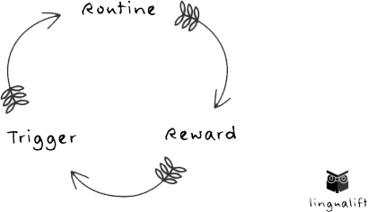

Enjoys these blogs written by our own Helios staff
Surge Capacity
Abby Lewis, LMSW - June 23, 2021
Many of us have gotten through “the firsts” associated with the Covid-19 pandemic, whether it be the first time we worked from home, the first time we wore a face mask out in public, or the first time we were our child’s teacher. As we have settled into our new normal, our emotions may not have responded in the way we were expecting. There are days when it all feels overwhelming and this is understandable. How could it not? There are also days where maybe it feels like nothing, or we struggle to connect. This is because we have reached the end of our surge capacity.
Surge capacity refers to the physical and mental systems we utilize to cope with a short-term crisis. Think of any disaster movie you’ve seen, such as Armageddon or Twister. The movie takes place within the scope of a crisis and the characters are using emotional and physical adaptations to cope. They think on their feet, and often run quite quickly. They are in survival mode. The action stops and we don’t see them continuing to cope several months later. If the movie continued for 6 months or so, chances are we would see our characters struggling in many of the same ways we find ourselves struggling.
The American Counseling Association has released the 4 M’s for coping with the pandemic and the end of our surge capacity. This includes movement, mindfulness, meaningful conversation, and mastery. Other than the fact that I enjoy a good pneumonic device, I like these tips because they can be fun to do. Coping with stress and good self-care does not have to be another chore on a long list. Give yourself some time because you deserve it!
Movement can include things like going for a walk or doing some stretching. Walking outside is a wonderful way to get in some movement, particularly when we can listen to the leaves crunching under our feet. There is a saying in Norway, “There is no such thing as bad weather, only bad clothes.” This is a good time to put on a hat and get moving. I have found yoga to be a good way to engage in movement. One of my favorite resources is a YouTube channel called Yoga with Adriene. She has a video for pretty much everything, her dog makes several guest appearances, and it’s free.
Mindfulness refers to being in the moment. This can look like acknowledging our feelings and allowing ourselves to sit with the discomfort, or to find joy in the present. There are many ways to practice being mindful. One of these is to meditate. I love the Headspace app for learning to meditate. The first several lessons are free and they have some free content to help with sleep as well. Mindfulness can be tricky initially, and our thoughts will wander. This is normal and will get better with practice.
Meaningful conversation is probably my favorite tip. We have so many ways of connecting with each other and yet many of us have never felt so disconnected. There are many ways to have meaningful conversation and connection while maintaining our social distance. For instance, I clean my house every Friday with a good friend of mine. She lives several hours away and we talk on the phone while we do laundry and clean bathrooms. My house is cleaner and I feel better having talked to her. Meaningful conversation does not always have to be serious. I find that asking what three movies one would take to a deserted island can be a great conversation starter.
Mastery is our last M. It refers to doing something that we are good at. This can also include an activity that you are working toward being good at. I, personally, baked my way through several weekends and can now make many different types of bread. Engaging in activities we are already good at is a good way to remind ourselves that we are capable of managing a challenge.
I have always found there is comfort in knowing we are not struggling alone. It doesn’t make our struggle any easier, but there is safety in numbers. If you are not feeling quite like yourself, try one of the 4 M’s. See if it helps.
Habits
Chastity Walker, LMSW - March 26, 2021
“You’ll never change your life until you change something you do daily. The secret of your success if found in your daily routine” John C. Maxwell.
If someone would have told me seven years ago that I would have been quoting on inspiration, I would have completely laughed in their face.
I used to have the mindset that quotes were cheesy, ridiculous, and absurd. How could a simple quote change our outlook on life, our routine, or
our relationships? It wasn’t until a co-worker/friend of mine, made the simple suggestion, “Chastity have, you ever thought about reading something
inspirational in the morning or at night, to help obtain a habit or structure within in your life?”
Habit? Structure? I was so confused. You see at the time, I was doing great in my career, had amazing friends and family, and was in a loving
relationship. So I must have had some level of habits and structure in my life, right? Why would she make such a suggestion?
Did she see that I always appeared to be tired? Or my constant need for caffeine? Or was it my continuous forgetfulness to pack a lunch?
You see, although, on the exterior I appeared to “Have it All Together”, internally, my life was being dedicated by a string of bad habits
and complete lack of structure.
We’ve all been there, right? Consuming continuous caffeine to survive the day, fast food on the way home because we are tired to cook,
scrolling on social media for extended periods of time, overspending, procrastination, smoking, alcohol/substances, etc. The list could go on and on.
Bad Habits=Productivity Killer.
So how do we stop ourselves from continuously utilizing/depending on our bad habits and re-taking control of our lives?
Below are some steps that have proven helpful in re-implementing healthy habits, structure, and productivity back within our lives.
• Identify And Understand Your Habit
• Practice Self-Discipline And Willpower
• Replace Your Bad Habit With A Good Habit
• Rewards
• Strong Support System
Once identifying what bad habit is unintentionally taking control within our life, we can then work towards understanding
why we have unconsciously chosen to utilize that particular habit. Listed below is the “Habit Loop”, which illustrates,
the cycle that often chains us to our particular habits.

Next up in kicking our habit to the curb, is practicing both self-discipline and willpower with replacing our bad habits with good habits.
Since our habits tend to be instinctive, it can be difficult to automatically eliminate them; therefore, the best course of action is to replace them.
• Prepare and Plan
• Commitment
• Effort
Lastly, reward yourself and have support! Remember it takes at least up to 21 Days to Form a habit, so be easy on yourself and reach out when needed --
whether it is through a family member, friend, mental health professional, or reading an inspirational quote :-)
Love or Fear?
Mary Leigh King, LMSW - December 19, 2020
Love and fear are the unseen governing forces behind most of what we do and often our unspoken but intended outcome.
Love and fear cannot coexist peacefully, one will override the other.
Love and fear behave in opposite ways because they have opposite goals.
The goal of love is connection. The goal of fear is distance.
When we show up in the space of love nothing can be done to keep us from connecting because the goal is connection.
When we show up in the space of fear nothing can be done to forge connection because the goal is distance.
Why does this matter?
When we practice shifting from fear to love it can radically change how we interact with people and the outcome of the interaction.
It also gives us a powerful tool in understanding what we are experiencing from or with another person.
Love is unconditional ~ Fear is conditional
Love trusts ~ Fear suspects
Love allows ~ Fear dictates
Love gives ~ Fear resists
Love is compassionate ~ Fear pities
Love creates ~ Fear negates
Love is patient ~ Fear is nervous
Winter is coming…and it’s dark outside…
Hetal Patel, MD, MPH - November 24, 2020
I am a big Game of Thrones fan. “Winter is coming” to me references the idea that we must always
be prepared against threats—and for mental health, gloomy weather is a threat. As the days have
gotten shorter, the clouds are plentiful, and the cold weather keeps us indoors longer, the more
likely we are to be without sunlight.
Sunlight is extremely important for mental health. Biologically, it raises levels of serotonin and vitamin D.
Physically, it makes us more alert and keeps us free from certain illnesses.
Emotionally, it creates happiness and reduces stress.
So, what do we do now?!?!?
There are options…no…there are things we must do to maintain our mental health.
First, we must expose ourself to as much light in the winter as possible. Get outside when it’s warm.
Get outside when it’s a little cold. Heck, get outside when it’s very cold (bundle up please!).
Be exposed to the sunlight when it’s available.
Next, use lamps and lights in the house. While it is not the same as sunlight, it does have benefits
on overall mood and energy levels. The brightness in the home is important to create an atmosphere
that is conducive to happiness.
For those that are more prone to struggling with low light, getting a sun lamp is a viable option.
A sunlight, happy light, light therapy lamp, or a light that goes by any other name like this,
can help mimic the natural light that the sun produces. These lights will need to produce a brightness,
or illuminance, of 10,000 Lux to get the full effect. There are many types of sun lamps available,
a few options are offered in the link below. To get the most out of the light, use early in the morning
by exposing yourself (do not stare at the light) for about 5 minutes in the beginning, and gradually building
up to 30 minutes a day over the course of a few weeks. The light should be about 2 feet away from you.
The effects on emotions are plentiful. Please talk to your mental health professional for more detailed instructions.
Road Rage Rampage
Jaimmie Koss, LLMSW - November 2, 2020
We’ve all experienced a similar scenario: we overslept or spilled our coffee, the kids won’t get dressed,
or our tank is on ‘E’ resulting in a stressful morning of running around.
By the time you’ve finally caught your breath on your way to work, and feel you might be able to save the day, it happens.
Someone cuts you off or turns in front of you forcing you to slam on the brakes.
Maybe they’re riding their brakes on the highway or going 10 under the speed limit.
Driving can be stressful and anxiety inducing, especially when it seems that the other drivers are out to get us.
In these moments it can seem like that person who cut you off is definitely out to get you causing you to feel angry and vengeful.
However, in the grand scheme of things it seems unlikely that these people are actually trying to inconvenience you.
Does it happen? Sure. Some people are just like that, but overall, most people aren’t.
In those moments of rage when we’re seeing red it can be so easy to lose our day. Now we’re flying down the road,
being short with our coworkers and not seeing how the day could possibly turn around, creating the Road Rage Rampage.
The domino effect of getting pissed off and then being nasty to everyone in our vicinity, which in turn causes them to be in a bad mood.
But let’s rewind, when we got cut off in traffic instead of sitting with our anger, let the anger exist in a flash.
Be angry about it because it was a rude thing to happen but after the flash burns out let's remember that everyone has bad days.
Every single person has overslept or spilled their coffee, everyone’s kids refuse to get dressed and everyone
leaves their tank to fill the next morning. Let’s work on practicing empathy and let our anger subside,
reclaiming the day instead of spending it in a rampage.
Social Media Safety
Jessica Pastva, DNP, PMHNP-BC - October 12, 2020
TikTok. Instagram. Twitter. Facebook. Snapchat. Discord. Tumblr. It seems like each month there is a
new app that adolescents are raving about. You may see your child practicing the newest TikTok dance
or posing for the perfect Instagram selfie. In 2020, it is common for teens to have cell phones with
internet access, making these apps readily available 24/7. These apps can be a way for teens to express
their creativity, learn about their interests, and to connect with friends and family. However, the internet
and social media apps can also lead to cyberbullying, privacy and identity theft, and exposure to inappropriate
content. Adolescents may not realize what risk they are placed at when these apps automatically post their location and full name.
Parents should be aware of what their children are doing online. However, snooping through your child’s
phone or computer can break trust and disrupt the line of communication. It is most important to communicate
that you want to respect your child’s privacy but also want to make sure they are safe. Request to go through
privacy settings of these apps together with your teen and make sure they know to keep their passwords private.
Talk to your adolescent about being nice to others, even when it is not the “cool” thing to do.
Express the permanence of the internet, and how once something is posted, it is never truly deleted.
In addition, talk to your child about only requesting and accepting friend requests to/from friends and not strangers.
Your adolescent may be savvier than you when it comes to the ins and outs of the internet and social media.
Thankfully, there are many free parental guides that will help you know what to look for and how each of these apps work.
On Internet Matters, parents can find internet and social media advice by age group including guides to different apps,
how to control settings, as well as determining appropriate amounts of screen time. This site also offers advices on
internet issues such as cyberbullying, sexting, self-harm, and online grooming. Another helpful site, Common Sense Media,
contains short and simple videos explaining different apps including gaming platforms such as Minecraft and Discord.
By using these resources, a healthy balance of online safety with respect to your child’s privacy can surely be achieved.
Equation for happiness
Abby Lewis, LMSW - October 2, 2020
Engineer Mo Gawdat wrote a mathematical equation for happiness. Now math was never my best subject, so even hearing
the word equation made me nervous. Luckily this equation doesn’t involve numbers or any those letters that algebra
is so fond of, so it is much more comprehensible to my math-phobic self.
Happiness = Reality – Expectations
The idea is that we often have expectations of an event. For instance, believing this will be the best summer yet,
only to find our summer to include sunburns and mosquito bites. It is when we try to remove the expectations, taking the
day as it comes, that we find the beautiful sunrises and evening bonfires.
It is difficult to subtract our expectations from the equation. The good news is that happiness can be found in the attempt.
We do not need to perform the calculation perfectly. When it comes to searching for happiness, we get credit just for trying.
What is comfort?
Mary Leigh King, LMSW - September 23, 2020
Over the course of our lives we acquire self-soothing skills and at times those may become ineffective and we have to try something new.
Below is a short list of self-soothing ideas.
• Shower or bath
• Visualization
• Loving self-talk
• Reach out to someone
• Any physical movement
• Ground yourself to bring yourself back to center, focus solely on one sense
o What do I see
o What do I hear
o What do I taste
o What do I smell
o What do I feel (tactile)
• Deep breathing, in two out four
• Let yourself sit with whatever emotion comes up for you, welcome it, do not resist, then release it
• Take a mental health day
• Do something or Do nothing
• Sing
• Listen to music
• Create something with your hands
Helios for mental health!
Hetal Patel, MD, MPH - September 18, 2020
In Ancient Greek mythology, Helios is the God of the Sun. Homer described Helios as the God who gives joy to mortals.
When starting this practice, my goal was to provide exceptional mental health care to those suffering with symptoms of depression, anxiety, bipolar disorder, trauma, substance abuse, among many others.
I wanted to have a company that would help people see the light—not just the light around them, but the light within. I am happy to say that while we are a beacon of light for many, our greatest accomplishments are helping individuals guide themselves to happiness and prosperity.
Helios was founded in 2015 and started as a company of 3 in New Baltimore. At that time, we served primarily Macomb County and Saint Clair County. In 2018, we grew and started the Troy clinic, expanding our service to Oakland, Wayne, and Washtenaw counties. At the time of this post, we are now serving patients literally all over the state of Michigan, due to recent advances in telehealth services. Helios now consists of 2 psychiatrists, 2 physician assistants, 2 nurse practitioners, 12 therapists, and 6 administrative staff.
We are all trying to embody what Helios was intended to do -- provide light and joy to those we serve and their families.